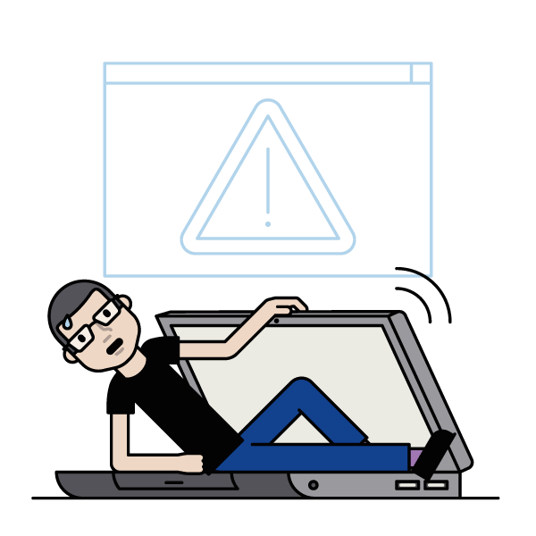
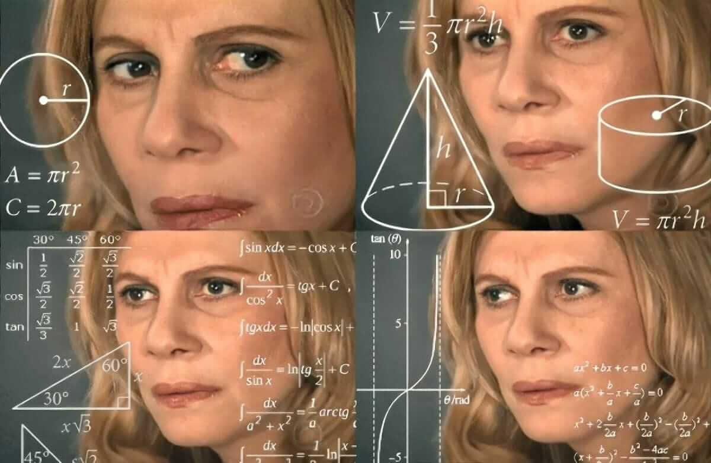

Антипаттерны фронтенда в полевых интерфейсах
Антипаттерны фронтенда
в полевых интерфейсах
Андрей Смирнов
@itsmirnov
Кто я?
Дисклеймер

🙊 Моё личное мнение
🤷🏻 Основанное на собственном опыте
Откуда вообще такая тема возникла?
Когда мы слышим слово фронтенд...
или хотя бы
Управляю разработкой в департаменте Качества
Однажды приехал в распределительный центр...
и увидел, кто и как взаимодействует с нашими интерфейсами
Получил задачу всё переделать
Начал копаться

Что такое полевой интерфейс?
Где живут такие интерфейсы?
ТСД со сканером
Старые компьютеры на РЦ
Планшеты в магазинах
Слабая сеть, слабое железо, высокий темп
Почему обычный веб здесь ломается?
Внимание пользователя ограничено
Человек работает в движении
Ввод грубее и неоднороднее
Состояние процесса важнее красоты экрана
Полевой интерфейс ломается из-за ложных предположений.
Единый режим ввода
на ТСД критичны скан и аппаратные кнопки;
на старом ПК мышь может быть вообще второстепенной
на планшете важны крупные зоны нажатия и одноручная работа
А как делать?
ТСД - это scan-first
Старый компьютер - это keyboard-first
Планшет - это touch-first
Одинаковый UI везде - неудобный UI везде
Маленькие кнопки эстетичны
Сначала промах
Потом повторный тап
Потом недоверие к интерфейсу
Минимум 24x24 px для pointer targets
Как ещё случается? Берём сущность из бэкенда и делаем из неё экран
Экран вокруг сущности
Поставка, карточка, акт, партия
Но человеку нужен не объект
Ему нужен следующий рабочий шаг
Интерфейс должен вести сотрудника по микро-действиям
Когнитивную нагрузку форм снижаем структурой, прозрачностью и локальной ОС
Спрятанное состояние процесса
Цвета, циферки во вкладке, исчезающие кнопки
Нужна явная модель состояния
Хороший UI - проекция машины состояний
Пользователь не понимает, где он сейчас
ожидание скана -> код получен -> товар распознан -> найдено расхождение -> нужны подтверждающие данные -> операция сохранена локально
Повтор действия опасен
Двойной тап
Retry после обрыва сети
Если это создаёт дубль, то проблема системная
Тяжелый фронтенд на слабом железе
Лишние подтверждения и модалки
Полевой интерфейс надо проектировать не от экрана, а от рабочего движения человека
Спасибо! Ваши вопросы?
@itsmirnov
Голосовать